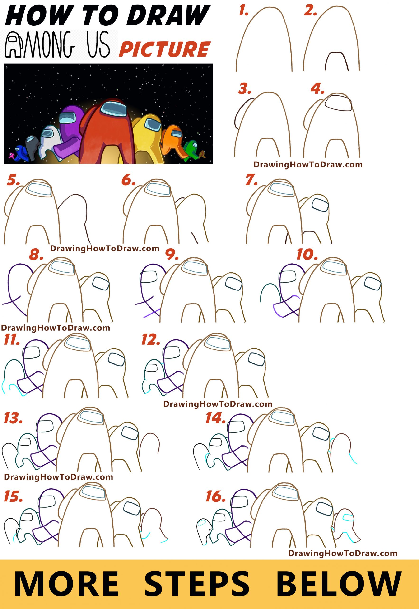
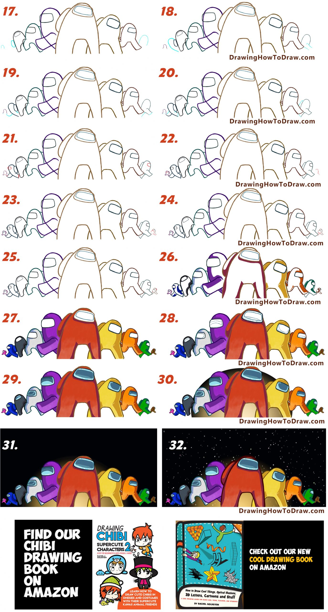
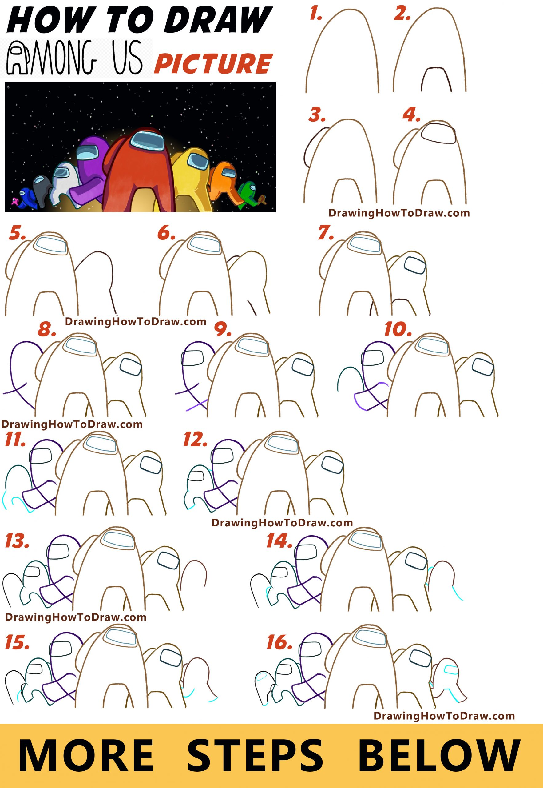
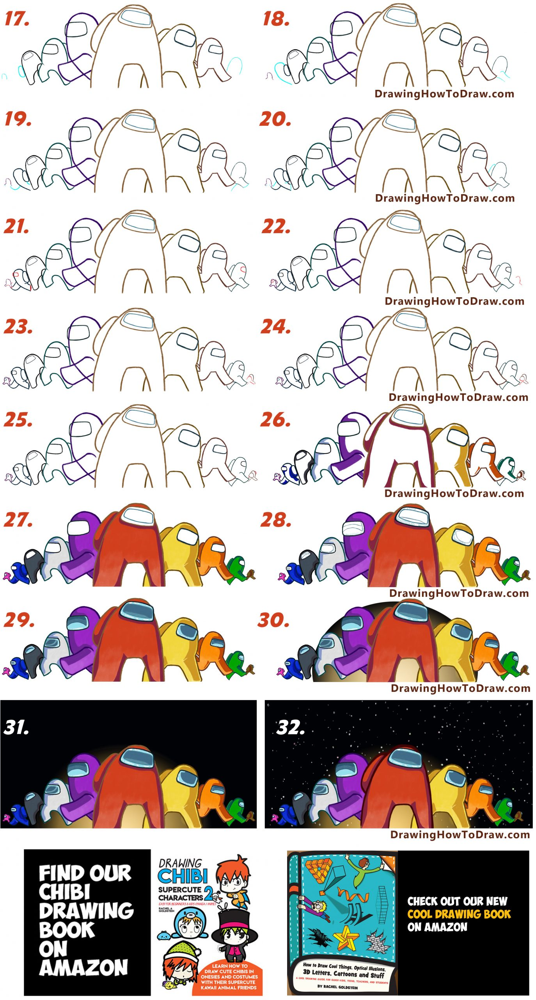

How to Draw Among Us Characters Picture – Easy Step by Step Drawing Tutorial for Kids
-- November 18, 2020 by admin 1 Comment
Today I will show you how to draw a scene with 10 characters from the popular video game, Among Us. I break down the tutorial into more than 30 steps, so hopefully, it is easy enough to follow along with. Happy Drawing!
How to Draw Among Us Characters Picture – Easy Step by Step Drawing Tutorial for Kids
 



WRITTEN OUT STEP BY STEP DRAWING INSTRUCTIONS
(STEP 01) Draw an upside-down “U” shape. This character’s outline is brown.
(STEP 02) Now draw a straight line across with 2 curved lines coming out on both sides. The whole shape is almost a bubble letter “A” shape.
(STEP 03) Now draw a slanted “C” shape for his backpack.
(STEP 04) Draw a rectangle with rounded corners. Make it a bit shorter on the top. This is the visor.
(STEP 05) With an aqua (greenish-blue color) draw an inner outline to the visor. Then start drawing the next character over. He is also brown. Draw a tilted “?” shape.
(STEP 06) Draw a line for the right leg. Draw an upside-down “J” shape for his backpack.
(STEP 07) Draw lines for the left leg. Draw a curved line at the bottom of the right foot. Draw a dark green visor for this new guy.
(STEP 08) Draw a lowercase letter “f” shape that is on an angle. Draw it in purple.
(STEP 09) Draw a line for part of the character’s leg. Draw a rectangle with curved corners for his visor.
(STEP 10) Draw a curved line on both sides of his leg that is sticking out. Draw a green upside-down “U” shape for the next character.
(STEP 11) Draw a sideways #2 shape and a line that curves toward the #2.
(STEP 12) Draw a few curved lines. Also draw a partial rectangle, with curved corners, for his visor.
(STEP 13) Let’s start with 2 new characters, one on the right and one on the left. They are both upside down “J” shapes or partial “U” shapes.
(STEP 14) Draw a “C” shape and a curved line on the character on the right. Draw a backward #3 shape on the character on the left.
(STEP 15) Draw a “J” shape, a curved line, and 2 lines on the character on the right. Draw a curved line on the character on the left.
(STEP 16) On the character on the right: Draw 2 slanted #7 shapes. Draw a rectangle with rounded corners for the visor. On the character on the left: Draw a curved line at the bottom of his foot. Draw a rectangle with rounded corners for the visor
(STEP 17) Draw a dark green backward “D” shape for the backpack of the next guy we are drawing on the left. Also, draw an upside-down purple “U” shape for the last guy we will draw on the left. On the right, draw an upside-down “U” shape for the next guy we will draw on the right.
(STEP 18) Draw a slanted #17 shape for the leg of the guy on the right. Draw a backward comma shape for the 1st guy on the left. Draw 2 lines on the 2nd guy on the left.
(STEP 19) Draw 2 curved lines on the guy on the right. Draw a curved line and a sideways “J” shape on the first guy on the left. Draw 2 short lines on the last guy on the left.
(STEP 20) Draw a curved line and an upside-down “J” shape on the guy on the right. Draw 2 lines and a flattened “D” shape on the 1st guy on the left. Draw 2 lines on the last guy on the left.
(STEP 21) Draw a partial oval for the visor on the guy on the right. Darken in the back foot of the 1st guy on the left. Draw a line at the end of his left foot too. Also, draw a rectangle with rounded corners for his visor. Draw a curved line between the legs on the last guy on the left. Also, draw 2 lines.
(STEP 22) Finish up the guy on the left with a partial oval for his visor. Start off a new guy on the right. Draw a sideways “?” shape.
(STEP 23) Draw an upside-down “U” shape. Draw a slanted “L” shape and a line.
(STEP 24) Draw a backward “L” for his back leg. Draw a curved line to finish his backpack.
(STEP 25) Draw a line on the back leg. Draw a backward “C” shape for his visor.
(STEPS 26-32) Color the scene in.